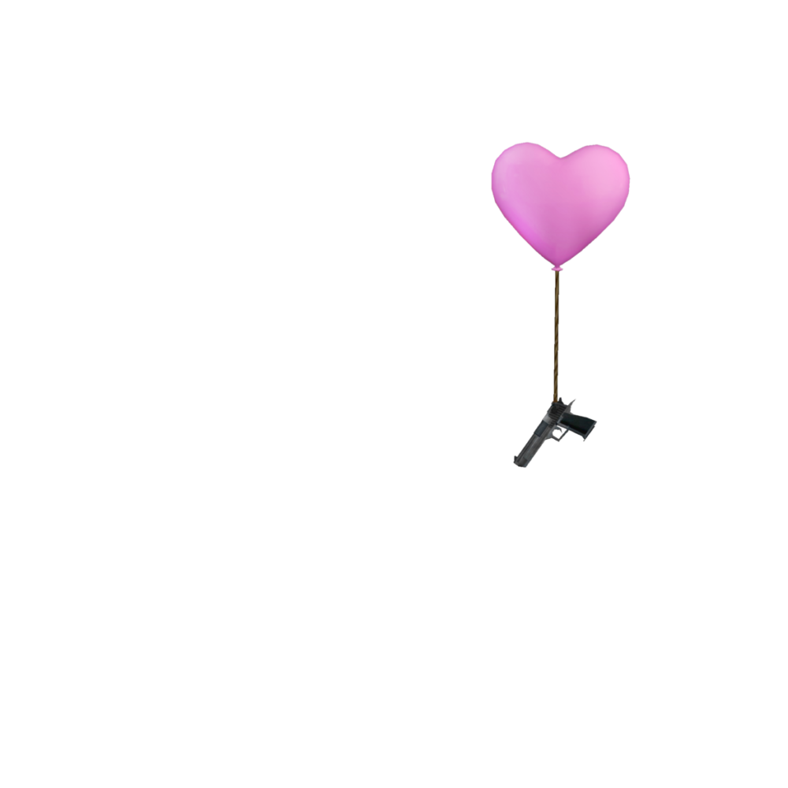
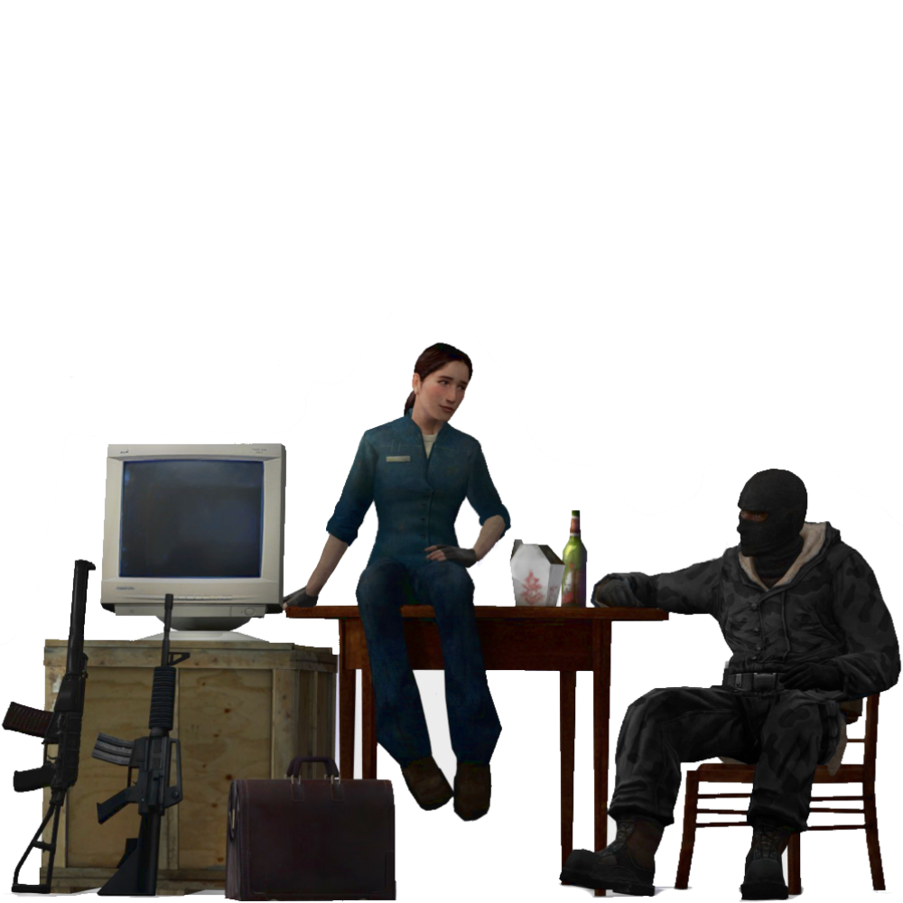

to my love, despite the fact I know you wont actually read this.
When I first seen a lovemail on rentry, I thought it was cringe, you know, something I'd never do, perhaps I was 'too good for that'. But it gives all these happy people an excuse to write about the person they love most, so I couldn't judge. until I found myself looking for more to read about, give me ideas for my own in a fake scenario. I didn't think I'd find myself in any of this, in a relationship, again, writing a lovemail, or keeping is secret on a voice call with you and void. It doesn't feel like anything that would happen to me, but I'm so glad it did.
♡
I remember waiting downtown in the city center, Lena and A had walked me from the bus stop as they had head to a cafe, Lena was nosey and took a window she could see me from as I sat on that cold seat waiting for your arrival. I took the initiative to top up my makeup a third time, I thought you'd never arrive, perhaps I'd been stood up? "have you by chance woken up?" "I have."
Sure, maybe not the best 'first' impression. I remember it all, like the back of my hand, the nervous feeling deep inside me which left an almost wry smile on my face, the neighbours that showed me the way, the clothes you wore and the hairclips I took off as soon as I got inside out of embarassment.
I knew I liked you right there. ♡
You were really quiet, I had to initiate most of the talking till we started playing. We played 2 matches of Halo Reach SWAT Pro, only cause it sounded cool. DMR only, no power ups (or whatever the Halo Reach equivalent is called.) I got a couple headshots, more than you actually, I'd say I have bragging rights, but in total honesty, I practiced the day before. I didn't want you to see how bad I really was! Next was COD 4, I think? (I'm so sorry, my knowledge on the franchise is horrible.) It was fun, I'd never admit it. I'll admit I tried shuffling closer to you on the sofa, but to no result as you were very stuck to finding me in the sword base 'sniper-tunnel-thing'.
You talked to me about montages, and tried to hit a trickshot on me on this map with some crashed plane. I don't think you ended up hitting it cause we were on console, and there was something to do with FPS and controller sensitivity. Either way, I ended up getting to see just how good you were after you sent me some of your clips! It was pretty hott~!
That wasn't really our first impressions, though..
All those times at the library, we seemed as though we didn't know eachother, despite how we'd have texted the night before. I'd catch myself staring at you for too long, or if I wasn't the one to realise it was either you, Eggy, or Lena. I'd admire the back of your neck as I walked behind you on purpose. Maybe I'd say hi? leave a note? I'd never act on it. I'd watch you as you left through the window, check to see if you'd left anything behind, and follow you up the bridge, then I'd turn back around and leave to the park, and think about what I could potentially do once I seen you again.
Some days you'd get busy with life and not appear. I'd wait and leave if you didn't. I was only there to see you, get a glimpse of you, the face I wanted to call mine, as my daily fix then head of to the park to think of you, and if we'd maybe ever speak properly. We would, eventually.
I never thought I had a chance with you, you had a positive reputation of a kind, lot's of friends, and were doing really well for yourself. We were like two different worlds compared to eachother, and still are. I never thought that you'd look at someone like me and say "yeah, shes pretty cute." The same person who would go home and play HL2RP or post some pretty crap art. It still confuses me.
♡
After that I started coming over more often, Tarkov (Now THATS something I'll admit is fun!), CS:S, HL2VR, shitty itch.io horror games, some of which did make me flip my shit. We went out to get food together, it was cold I wanted nothing more to hold your hand, wrap my fingers up in yours, and feel if they were soft as we walked that bridge. Instead, I stuffed my face with pringles told you about my growing Half-Life collection hugging the bag of my chinese trying to keep warm.
Usually, around 2 days a week after school I'd push myself up Captain Street and watch the builders in the construction site steadily make progress on those new houses, sometimes I'd wave to them or stop to talk. I'd look through the windows to all the shops as I treked further up. I'd listen to the same song everytime I walked up to your house, Luv(sic) pt.3 ~♪ I remember sending it to you before we had even met up. I suppose subconsiously I now associate the song with you, I'd listen to it on the bus to yours, walking up, wether that be to the library or yours, and at the park walking home. Now that we aren't going to be at High school anymore. I'll never get that same feeling of walking up that dreaded street. I'd love to experience it all again. How dark it got early, and how busy it'd still be late due to christmas and such.
When I listen to the song again, that same feeling rises in my chest like the first days I had with you, the nervousness and excitement, It means the world to me, I love the song, the lyrics and the beat, it all makes me think of you. It lets me recall everything, the first day, trying to guide me on Tarkov and HL2VR, and the talks we had walking me back home. When you left me off and told me you really enjoyed my company. It's a feeling once so foreign to me now so common. Now shannan likes the song, sometimes when she's driving she'll put it on and I have to hide a childlike grin or tears of joy. ♡
I know I will never make my way up Captain Street again, in that familiar uniform, I might mourn that old feeling, but it's been a while. I can't wait to see what will happen with us next as we move on to this new part of our lives, together! It feels good to say.
♡
I love you so much, I hope that we can stay together for as long as time, end up like the corpses in ep2_outland_09 hopefully, before any kind of combine intervention. We can make our way through tech and work and whatever else may come, hand-in-hand, dance the same dance we have been. I want to help you through whatever might be an issue, let you talk to me about anything and everything! we can be the likes of cits_consoling_couple, together through it all! ~♪
And no, no matter how much of a Combine loyalist I might be. I don't want the Combine over here. theoretically of course, if they did.. I'd get us the best room in the best block of C17 or wherever we'd be transferred, together. We'd get loyalist grade rations, and maybe even bedframes! "No need to thank me!" Once the inevitable 'One Free Man' arrives we take off to the trains and take a smooth ride to our new dwelling at White Forest Base!
Just in time for the fall of the suppresion field, hm, babe? We all have to play our part!
No better way to show your love for your partner than to tell him all that you'd do at the face of a Combine Invasion, hah? Yeah, I'm not good at this whole writing a lovemail thing. But I feel I can best describe my love this way.
I love you so much, K ♡
Hopefully, I make you as happy as you make me, I want to give you the world, and treat you to the best of it! I want to show you how great it can all get! We can experience our best years together, and I'll make sure I can make them even better for you! You fill me with a child like joy, I became an unrecognisable person after I met you, I'd smile more than ever at people I didn't know, let a grin split across my face in public as I'd think of the next time I'd see you, sure, maybe I looked like a methed up druggie? smiling to myself, but what do I care? I met the love of my life!
I want you always, I wish for your company constantly, whenever it gets cold I ask myself, "would I be cold with you here?" or in face of loneliness or someone rude I can only think of how much more contented I'd be with you by my side. The one thing I wish for most is your presence with me always. ♡ I'm reminded of you constantly, I'll see something that makes me think of you, wether it be spy, or a man walk past me in a red flannel shirt and I think of your Project Zomboid character, that one time.
I get jealous when I see couples and i'm not with you - I want nothing more than to let the world know were together!! I see us in the couples I see on the street, in Gordon and Alyx, P-Body and Atlas, Zoey and Ellis, The consolling couple, Female_01 and Male_07 from 'A Kiss Goodbye', Ms.Pauling and Scout, or Spy I don't know your personal preference! Or perhaps even Samira and Kyle (if we really wanna get into my stuff *wink* HL2 ERP.. *wink*)..
I'd be your pocket medic if you need it (you never will, you don't play heavy.), your Magnusson Device to a strider, your willing accompliace when your the traitor, or your vortessence if you've been impaled! I'll finish this up quickly, and save you from the embarassment of what has already been said. I hope all that didnt make you cringe THAT bad, I'm sorry. Even though I know you'll not read this. I know you well enough, I know you don't care about any of this, I wish you would.
~♪
I love you so much baby, I love you through this world and back, (Xen, too!) I can't wait till I see you, and can feel the sweet feeling of your skin against mines, your smile and your laugh.
♡ I love you K, mon petit chou fleur.. hehe.
I love you, alot. but not enough to make a page off of light mode, sorry.
This is only going to look right 1080p, 100%! image scaling.
i'm sorry